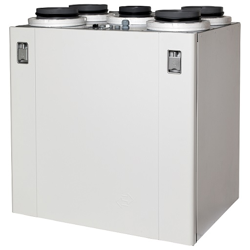

Rekuperatoriai | Mini Rekuperatoriai | Gedarta.lt
- Rekuperatoriai, kaina | rekuperatoriucentras.lt
Rekuperatoriai ir minirekuperatoriai (275) Akcijos ir naujienos; Rekuperatoriai (96) Mini rekuperatoriai (18) Geoterminiai šilumokaičiai rekuperatoriai; Rekuperatorius + šilumos siurblys „oras-oras“ (3) Lanksčių ortakių sistemos (82) Priedai (55) Plyšiniai difuzoriai (10) Difuzoriai (7) Įleidžiami, priglaistomi difuzoriai (4) - Rekuperatoriai, rekuperacinės sistemos | namams24.lt
Rekuperatoriai butams gali būti įrengiami pasirinkus iš plataus modelių sąrašo. Pagrindinis buto pertvarkymas būtų tas, kad reikėtų plano, kaip kuo geriau pravesti ortakius. Geri meistrai pasirūpins, kad nuo to nenukentėtų Jūsų buto lubų aukštis. Taip pat Jūs visada galite rinktis ir sieninius rekuperatorius. - Rekuperatoriai | Mini Rekuperatoriai | Gedarta.lt
Rekuperatoriai – tai šilumokaičiai, kuriuose iš kambario išeinantis šildomas oras didžiąją dalį šilumos atiduoda šaltam orui, patenkančiam iš lauko. Tai yra, – išeinantis oras šildo įeinantį. Žiema prisimename šiltas vasaros dienas ir laukiame, kol grįš šiluma. Tačiau mes negalime laukti gamtos malonumų, todėl ... - Rekuperatoriai butui | sildymas-vedinimas.lt
Rekuperatoriai namams, butams ir komercinių patalpų vėdinimui. Rekuperatoriai su rotaciniais, plokšteliniais šilumokaičiais. Įrenginių našumas nuo 50 iki 25 000 m3/h. Mūsų kataloge esantys rekuperatoriai gali ne tik vėdinti bet ir šildyti patalpas (žr. konkretų modelį). - Rekuperatoriai | Orokondicionieriai.pro
Rekuperatoriai – pagrindiniai prietaisai, kurie yra skirti užtikrinti tinkamą vėdinimą ir šilumos išlaikymą. Konsultuokitės tel. +370 670 26670 - Rekuperatoriai | Vilpra.lt: Šiluma Jūsų namams
Domina rekuperatoriai, vėdinimo, kondicionavimo ir šildymo sistemos bei montavimo paslaugos gera kaina? Mes galime padėti! Susisiekite tel. +370 (693) - Rekuperatoriai | Šilumos atgavimo įrenginiai ...
Efektyviai veikiantys mini rekuperatoriai privatiems ir verslo objektams. Skirtingos charakteristikos rekuperacinė įranga, geriausios kainos garantija. - Rekuperatoriai | Šilumos siurblių ir vėdinimo sistemų ...
Rekuperatoriai + Užklausti + Titon Rekuperatorius + Atrea Rekuperatorius + Itho Rekuperatorius + Brofer Rekuperatorius + Brink Rekuperatorius. Siekiame, kad kiekvienas klientas būtų patenkintas atliktų darbų kokybė ... - Beortakiniai rekuperatoriai - HomeAir
Brofer firmos rekuperatoriai pasižymi aukštu šilumos grąžos efektyvumu – iki 90%, energijos efektyvumo klasė A. Šios firmos produktų serijoje rasite ne tik begalo platų asortimentą, bet ir prekes, kurios stebins inovatyviais inžineriniais sprendimais bei savo kokybe.Rekuperatorių galingumas vyrauja nuo 160 m 3 /h iki 470 m 3 /h ... - Rekuperatoriai | Oris.lt - Šildymas, Šaldymas, Vėdinimas
Rekuperatoriai - šiuolaikiškas ir praktiškas sprendimas, reikalaujantis nedidelių investicijų ir tuo pačiu padeda taupyti. Jų sistemos yra yra kelių rūšių.

+370 640 25 970 info@gedarta.lt Palyginimas 0 TAISYKLĖS KONTAKTAI KREPŠELIS Prekių krepšelis tuščias.
ORO
KONDICIONIERIAI Akcijos ir naujienos Sieniniai kondicionieriai top Šilumos siurbliai oras oras top AirZone išmanusis kondicionavimas Kasetiniai oro kondicionieriai Ortakiniai (kanaliniai) oro kondicionieriai Palubiniai (konsoliniai) oro kondicionieriai Grindiniai kondicionieriai Mobilūs kondicionieriai Multi split kondicionieriai Oro kondicionieriai be išorinio bloko Kondicionierių priedai Kondicionieriaus galingumo skaičiuoklė REKUPERATORIAI IR
MINIREKUPERATORIAI Akcijos ir naujienos Rekuperatoriai top Mini rekuperatoriai top Geoterminiai šilumokaičiai rekuperatoriai Rekuperatorius + šilumos siurblys „oras-oras“ Lanksčių ortakių sistemos Lanksčių ortakių sistema Difuzoriai Vamzdynai Pereigos ir kaminėliai Priedai Plyšiniai difuzoriai Difuzoriai Įleidžiami, priglaistomi difuzoriai Rekuperatoriaus filtrų užsakymas ŠILDYMAS Akcijos ir naujienos Dujiniai katilai top Šilumos siurbliai „Oras - vanduo“ top „Žemė - vanduo“ „Oras - vanduo“ + rekuperatoriai Elektriniai katilai Granuliniai katilai Grindų šildymo sistemos Uponor Kolektoriai Belaidė patalpų temperatūros kontrolė Uponor Smatrix Wave Plus Laidinė patalpų temperatūros kontrolė Uponor Smatrix Base Boileriai Priedai Saulės kolektoriai KITOS PREKĖS Akcijos ir naujienos Oro drėkintuvai/valytuvai Drėgmės surinktuvai PASLAUGOS Montavimo kainos nustatymas ONLINE Kondicionieriaus galingumo skaičiuoklė Objektų peržiūra Projektavimo darbai Šildymo sistemų remontavimas ir montavimas Vėdinimo sistemų montavimas ir priežiūra APIE MUS NAUJIENOS KREPŠELIS PRADINIS Rekuperatoriai ir minirekuperatoriai
Rekuperatoriai ir minirekuperatoriai
Rekuperatorius yra specialios paskirties patalpų vėdinimo įrenginys, mechaniniu būdu paimantis iš patalpos orą, kuris keliauja per rekuperatoriuje esantį šilumokaitį ir jį sušildo. Tokiu būdu iš lauko paimamas oras, keliaudamas per šilumokaitį atgal į patalpas, sušyla, grąžindamas iki 90 proc. iš patalpų paimtos šilumos.
Toks patalpų vėdinimas neiššvaisto patalpų šilumos ir leidžia sumenkinti patalpų šildymo išlaidas. Šiandieniniai būstai turi daug kambarių, koridorių, kampų ir kitų vietų, kuriose gali atsirasti drėgmė ir formuotis pelėsis.
Drėgmė atsiranda švarinant namų aplinką, naudojant dušą, netgi kvėpuojant. Pirmiausi blogos ventiliacijos ženklai yra kondensatas ant langų. Gali atsirasti juodų taškelių kambario kampuose, taip pat ant lubų. Patalpas vėdinti būtina, nes tinkamas ir subalansuotas patalpų vėdinimas pašalina teršalus, suteikia daugiau dienos metu reikalingos energijos, pagerina miego kokybę ir nuotaiką, kadangi gaunama pakankamai deguonies.
Akcijos ir naujienos
Rekuperatoriai
Mini rekuperatoriai
Geoterminiai šilumokaičiai rekuperatoriai
Rekuperatorius + šilumos siurblys „oras-oras“
Lanksčių ortakių sistemos
Priedai
Plyšiniai difuzoriai
Difuzoriai
Įleidžiami, priglaistomi difuzoriai
Rekuperatoriaus filtrų užsakymas
PREKIŲ PAIEŠKA
KATEGORIJOS
Oro kondicionieriai (352) Rekuperatoriai ir minirekuperatoriai (275) Akcijos ir naujienos Rekuperatoriai (96) Mini rekuperatoriai (18) Geoterminiai šilumokaičiai rekuperatoriai Rekuperatorius + šilumos siurblys „oras-oras“ (3) Lanksčių ortakių sistemos (82) Priedai (55) Plyšiniai difuzoriai (10) Difuzoriai (7) Įleidžiami, priglaistomi difuzoriai (4) Rekuperatoriaus filtrų užsakymas Šildymas (344) KITOS PREKĖS (13)Atsiliepimai
UAB „Gedarta“ dirba laiku, efektyviai ir padeda įtikti net ir išrankiausiems klientams, dėl ko esame dėkingi. Be to, galime pasitikėti: visada gausime gerą kokybę už norimą kainą“ Nekilnojamojo turto vystymo įmonės direktorius Mindaugas Vanagas. UAB „Gedarta“ nebijo naujovių ir iššūkių, visada ieško inovatyvių sprendimų, todėl renkamės UAB Gedarta kaip patikimą partnerį UAB „Pažangi statyba“ direktorius Stasys. UAB Gedarta kaip ir UAB Mano būstas yra visiškai atsidavę tam, ką daro. Todėl mums bendradarbiauti malonu. Ir kartu mes padarome daugiau Statybų įmonės UAB Mano būstas technikos vadovas Vytautas.KONTAKTAI
Tel. nr. + 370 640 25 970El. p. info@gedarta.lt
Darbo laikas: I-VII, 8-19 val. Atstovybė Klaipėdoje:
Tel. nr. +370 628 22007
El. p. klaipeda@gedarta.lt
INFORMACIJA
Prekių pristatymas Grąžinimo taisyklės Atsiskaitymo būdai Privatumo politikaREKVIZITAI
UAB "Gedarta"Žalgirio g. 131, 206 kab. Vilnius
Įmonės kodas 301507027 PVM Kodas LT100003790615
LT03 3500 0100 0224 7954
Paysera LT UAB, 35000 SEKITE MUS:
© 2020 Visos teisės saugomos. Gedarta inžinerinės sistemos. Pagauna šaltį ir šilumą. Sumažina rūpesčius ir išlaidas.
REGISTRACIJA Į OBJEKTŲ PERŽIŪRAS
× Į VIRŠŲ
